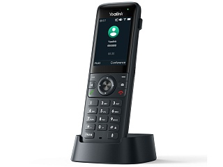

Yealink AX83H
Цена носит информационный характер — актуальную стоимость и наличие уточняйте у менеджера.
Беспроводной SIP-телефон для четкой связи
Yealink AX83H — корпоративный беспроводной IP-телефон с цветным дисплеем и встроенным модулем Wi-Fi. AX83H поддерживает регистрацию до 4 SIP-аккаунтов и оснащен цветным дисплеем 2,4''. AX83H объединяет в себе технологии Yealink Optima HD Audio и интеллектуального шумоподавления Smart Noise Cancel, что обеспечивает исключительное качество звука и кристально чистую голосовую связь без отвлекающих факторов, что способствует эффективной коммуникации.
AX83H оснащен встроенными модулем Bluetooth 5.0 для подключения беспроводной гарнитуры, освобождая руки и повышая удобство работы, а также 2-диапазонным модулем Wi-Fi 2,4/5 ГГц стандарта 6, что обеспечивает оптимальную защиту от помех и более высокую скорость передачи данных. Это особенно важно в загруженных средах. Передовая технология бесшовного роуминга позволяет автоматически переключаться между точками доступа без разрывов соединения, обеспечивая непрерывную работу и мобильность.
Кроме того, AX83H оснащен аккумулятором емкостью 2000 мАч, который обеспечивает до 9 ч разговора и до 200 ч в режиме ожидания, что делает устройство надежным в использовании на протяжении всего рабочего дня. Также телефон позволяет освободить руки при использовании зажима для ремня, например, при работе на заводе или на складе, а встроенный вибромодуль не позволит пропустить звонок даже в шумных местах.
2-диапазонный Wi-Fi стандарта 6
AX83H обеспечивает мобильность и гибкость в любой локации при наличии необходимой инфраструктуры. 2-диапазонный Wi-Fi стандарта 6 характеризуется высокой степенью защиты от помех и более высокой скоростью передачи, что позволяет пользователю оставаться на связи в условиях интенсивной передачи данных. AX83H поддерживает протокол быстрого роуминга IEEE802.11 k/v/r, гарантируя автоматическое переключение сети за миллисекунды. Широкая зона покрытия и быстрый роуминг обеспечивают плавное переключение между точками доступа и непрерывность работы. AX83H оснащен встроенным модулем Bluetooth 5.0 для подключения Bluetooth-гарнитур, что оптимально в условиях совместной работы в современном мобильном офисе.
HD-аудио
Технология Yealink Optima HD Voice сочетает в себе передовое аппаратное/программное обеспечение с широкополосной технологией, что позволяет достичь оптимальных акустических характеристик. AX83H совместим со слуховыми аппаратами (HAC), помогая пользователям с нарушением слуха воспринимать голос собеседника более четко.
Единое управление, простота обслуживания
Wi-Fi-телефоны Yealink серии AX используют унифицированное встроенное ПО и поддерживают платформу управления устройствами Yealink Device Management Platform (YDMP), что значительно упрощает развертывание и управление, снижает затраты на техническое обслуживание, облегчает модернизацию. Кроме того, Wi-Fi-телефоны Yealink серии AX поддерживают быструю настройку сети с помощью смартфона, что позволяет осуществлять массовый доступ к беспроводным сетям Wi-Fi по воздуху, повышая скорость развертывания.
Гарантия — 18 месяцев.
Характеристики
Основные характеристики
- 2,4" TFT-дисплей с разрешением 240 x 320
- 4 SIP-линии
- Клавиши TRANS и Mute, 9 настраиваемых клавиш
- HD-звук и шумоподавление
- Крепление на ремень
- Встроенный 2-диапазонный модуль Wi-Fi 6
- Встроенный модуль Bluetooth 5.0
- Русскоязычное экранное меню и веб-интерфейс
Функции телефона
- Быстрый набор, повторный вызов
- Удержание/перевод/ожидание/переадресация вызова
- Экстренный вызов
- Отключение микрофона
- Режим DND
- Автоответ
- Горячая линия
- Локальная 5-сторонняя аудиоконференция
- Вызов по IP-адресу
- Настройка мелодий вызова: выбор/импорт/удаление
- Настройка даты и времени: ручная или автоматическая
- План набора, XML-браузер, Action URL/URI
- RTCP-XR (RFC3611), VQ-RTCPXR (RFC6035)
- Настраиваемые программные клавиши
- Настройка обоев и заставки
Функции вызова
- Анонимный вызов, отклонение анонимного вызова
- Интерком
- Широковещательный пейджинг
- Отложенный вызов
- LED-индикатор сообщений и вызовов
- Парковка вызова, перехват вызова
- Запись вызова
- Голосовая почта
- Caller ID с именем, номером и аватаром
Телефонные книги и история вызовов
- Локальная телефонная книга на 1000 записей
- Удалённая телефонная книга XML, LDAP
- Чёрный список
- Интеллектуальный поиск по контактам
- Телефонная книга: поиск/импорт/экспорт
- Журнал вызовов: все/входящие/исходящие/пропущенные/переадресованные
Аудио
- HD-аудио (трубка и спикерфон)
- Совместимость со слуховыми аппаратами (HAC)
- Аудиокодеки: G.722, PCMU (G.711μ), PCMA (G.711A), G.729, G.729A, G.729B, G.729AB, G.726, G.723.1, iLBC
- DTMF: In-band, Out-of-band (RFC 2833), SIP INFO
- Спикерфон с шумоподавлением
- Технология умного шумоподавления
- Обнаружение голосовой активности (VAD)
- Генерация комфортного шума (CNG)
- Акустическое эхоподавление (AEC)
- Сокрытие потери пакетов (PLC)
- Адаптивный буфер джиттера (AJB)
- Автоматическая регулировка усиления (AGC)
Сеть
- Встроенный 2-диапазонный модуль Wi-Fi:
- стандарт: 2,4 и 5 ГГц IEEE802.11 a/b/g/n/ac/ax
- роуминг: IEEE802.11 k/r/v
- Встроенный модуль Bluetooth 5.0:
- подключение к беспроводной гарнитуре
- Поддержка IPv4/IPv6
- SIP v1 (RFC2543), v2 (RFC3261)
- Резервирование SIP-сервера
- Преодоление NAT: STUN
- Режим SIP-соединения: Proxy и peer-to-peer
- Режим присвоения IP-адреса: статический/DHCP
- Веб-интерфейс по HTTP/HTTPS
- Синхронизация времени и даты по SNTP
- UDP/TCP/DNS-SRV (RFC 3263)
- QoS: Layer 3 ToS DSCP, 802.11e/WMM
Безопасность
- Поддержка TLS 1.3
- Управление сертификатами HTTPS
- AES-шифрование конфигурационных файлов (AES256)
- Дайджест-аутентификация с использованием MD5/MD5-sess
- IEEE802.1X
- WPA, WPA2, WPA3
- Безопасная загрузка
- GARP (Generic Attribute Registration Protocol)
Управление устройством
- Настройка через браузер/телефон/Autoprovision
- Autoprovision через FTP/TFTP/HTTP/HTTPS/TR-069
- PnP Autoprovision
- Блокировка устройства
- Сброс к заводским настройкам, перезагрузка
- Экспорт сетевого и системного лога
- Поддержка YDMP/YMCS
- Обновление прошивки
Физические характеристики
- Клавиатура с подсветкой
- Виброоповещение
- Безопасная высота падения: 1,5 м
- USB Type-C для зарядки
- Время работы в режиме разговора: до 9 ч (в идеальных условиях)
- Время работы в режиме ожидания: до 200 ч (в идеальных условиях)
- Настольная и настенная установка
- Блок питания: вход AC 100-240 В, выход DC 5 В/1,2 А
- Разъём 3,5 мм для гарнитуры
- Рабочая температура: 0-40 °C
- Относительная влажность: 10-95%
- Размер трубки: 151 x 49,5 x 21 мм
- Вес трубки: 126 г